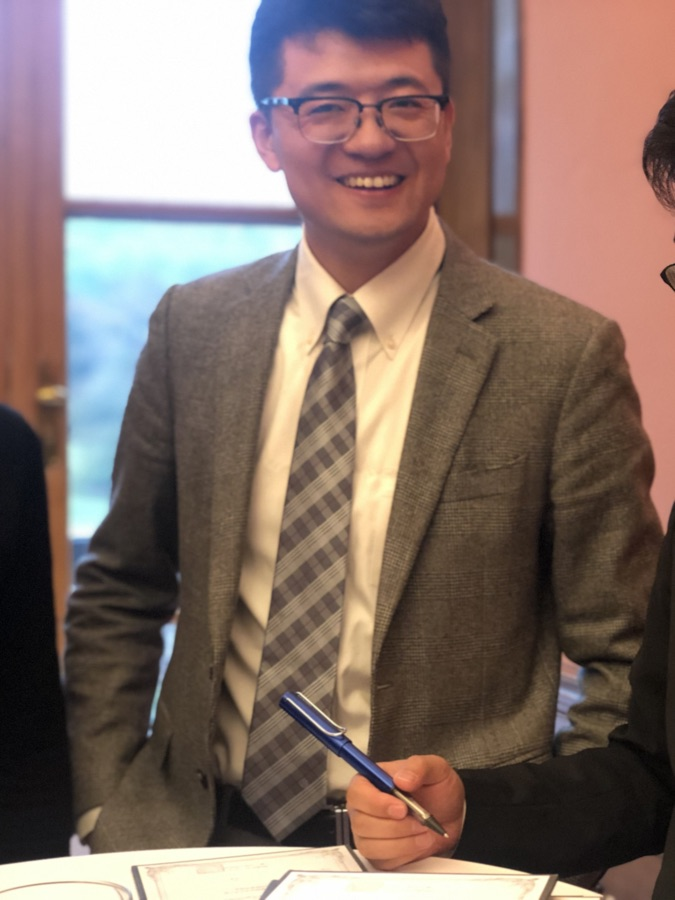

我是黄汪传，朋友们叫我黄师傅。过去十年，我带企业家见老师、见山河； 这两年，我带他们见科学家、见实验室。
FDE 的意思是 Forward Deployed Engineer——不交付概念，只交付跑得起来的东西。 深入现场，把 AI 与内容能力嵌进业务里，产出可验证的成果物。

前两条是这两年长出来的新能力，后两条是过去十年攒下的底子。 它们叠在一起，构成了别处不容易找到的组合。
从信息采集、研究、起草到归档，把整条链路编排成定时任务，让人只做判断和定稿。 已跑通的：每日 4 次自动产出科技情报简报（连续 41 天、160+ 期）、 每日 06:00 自动巡视全球五层信息源的实验室雷达、170+ 模块的视频剪辑智能体。
科技长文、视频脚本、访谈策划、本人出镜口播。事实可回溯到论文与一手信源， 表达接得住企业家与高知群体。代表作：《黄师傅问机器》系列、 《从香巴拉到实验室》七期脚本、MIT 科技评论科学家访谈项目。
品牌全案、年度推广节奏、内容矩阵、视觉体系、官网与落地页、知识产权布局。 长期与平面设计师、摄影师、剪辑师协作，本人负责方案与内容层。
十年间办 200+ 场线下课程、50+ 场国内外游学，招募并带班 120+ 位企业家学员， 累计学费 400 万+。擅长的不只是讲课，是造一个让人愿意开口的场。
每个案例都能点开原件。客户敏感材料做了脱敏处理，完整版可邮件索取。
把「全球科技资讯 → 中文深度简报」整条链路做成无人值守流水线，每天自动运行 4 次。连续 41 天产出 160+ 期，覆盖论文、高校官网、科技媒体三层信源。
以「实验室」为母题，搭建从命名、商标注册策略、栏目矩阵到视觉体系的完整 IP。含《从香巴拉到实验室》七期视频脚本、12 尺寸视觉资产、商标风险评估。
每日 06:00 自动巡视全球五层信息源，反推到具体实验室与团队，产出早报；三个固定节点由人参与决策，最终同步产出口播脚本与公众号文章。
从 0 起步为浙江大学招募企业家学员并全程带班，三年三期累计 120+ 人，学费收入 400 万+。特殊时期为企业家群体构建学术共同体与精神家园。